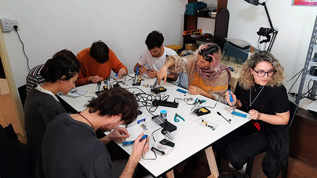

Estudio-Laboratorio, barrio de Monte Castro (CABA)
El estudio Videonix surge como una necesidad de contar con un espacio idóneo para generar material visual experimental, con el fin de que pueda ser utilizado en obras, video en vivo, y producciones audiovisuales de todo tipo (videoclips, cine, difusión, etc).

TALLER DE VIDEO ANALÓGICO
videonix.plano@gmail.com
Posee equipamiento analógico y digital muy variado, como son mixers, procesadores, cámaras, generadores de señal, sintetizadores de video, máquinas de glitch, computadoras, monitores CRT, analizadores de señal, reproductores analógicos y digitales, y largo etc.